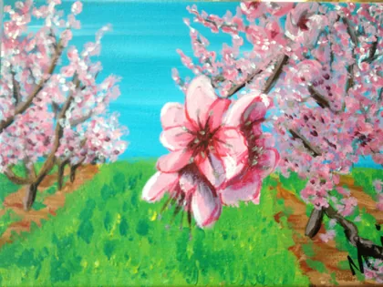
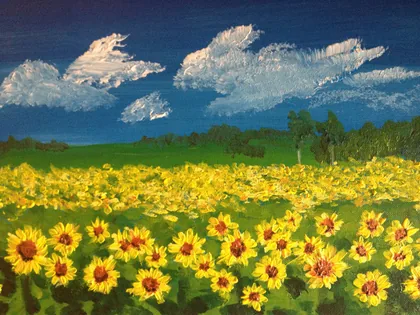
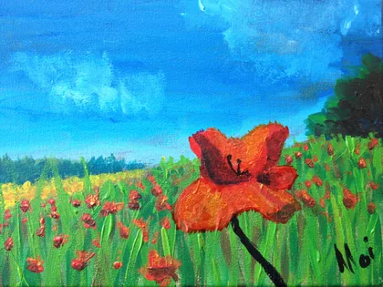
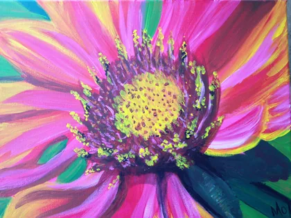
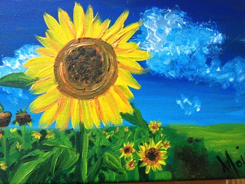

5 images · Touchez une image pour l’agrandir.










Un univers de Sandrine · Haudryane
Paysages et scènes peints par Sandrine. Galerie des créations de Sandrine, alias Haudryane, à parcourir en grand.
5 images · Touchez une image pour l’agrandir.




